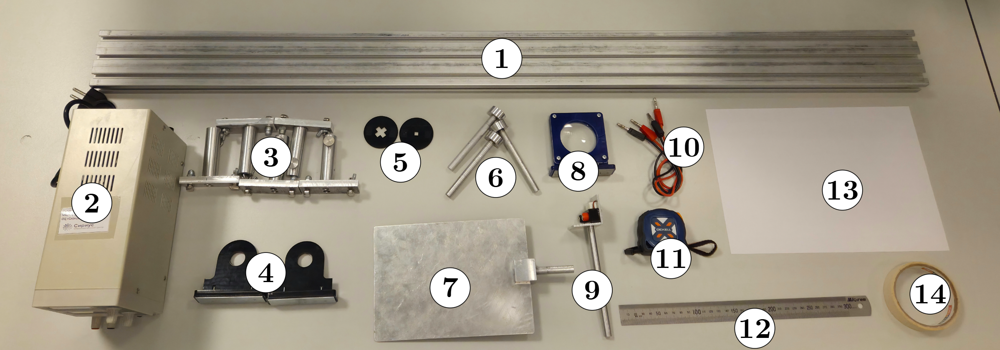
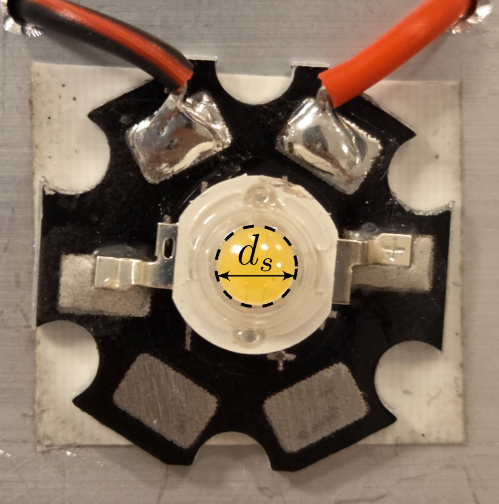
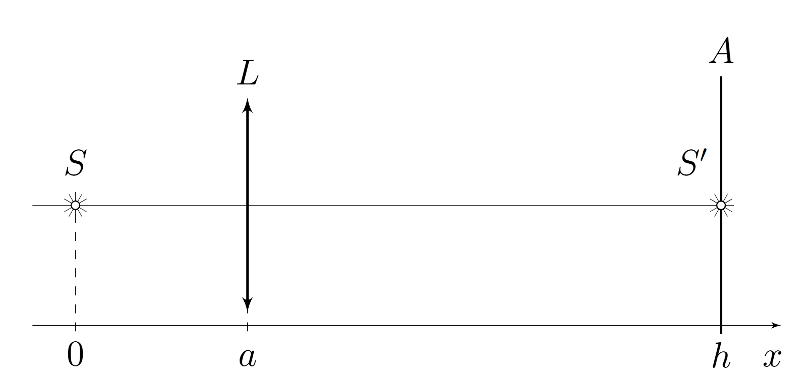
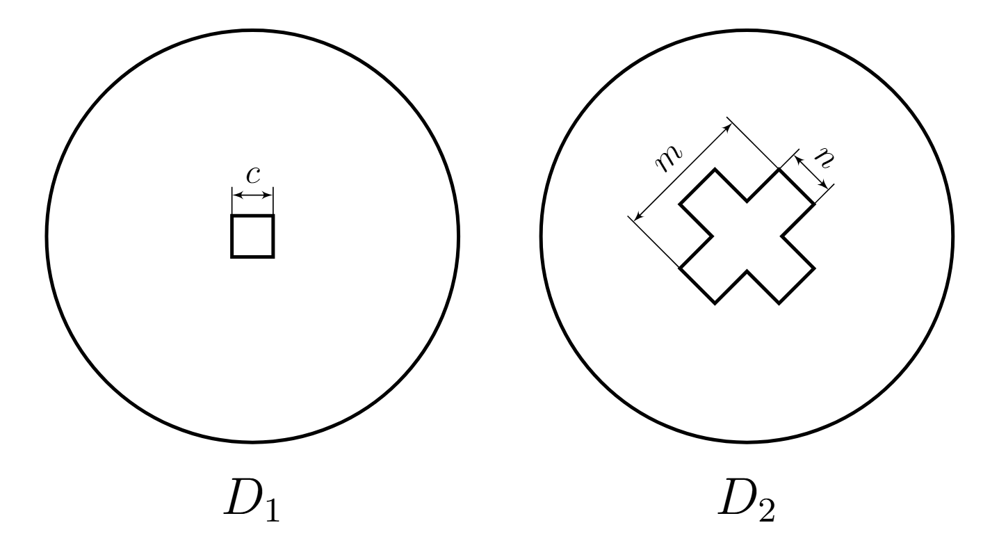
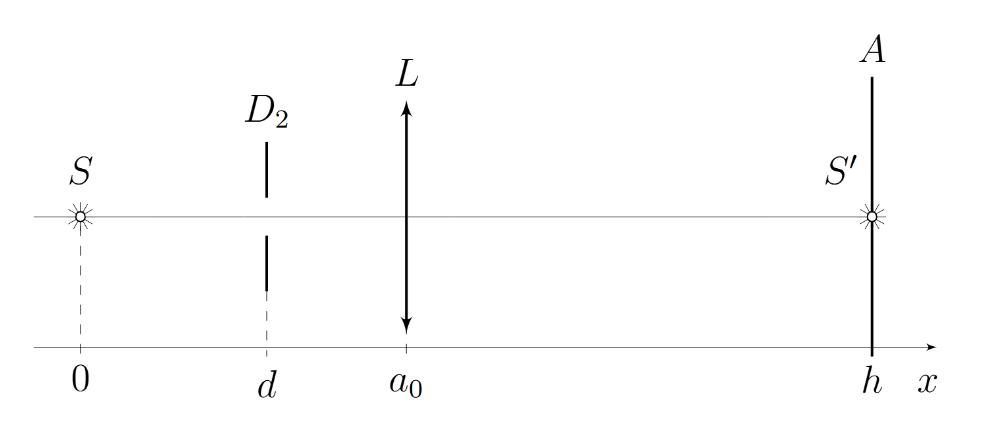
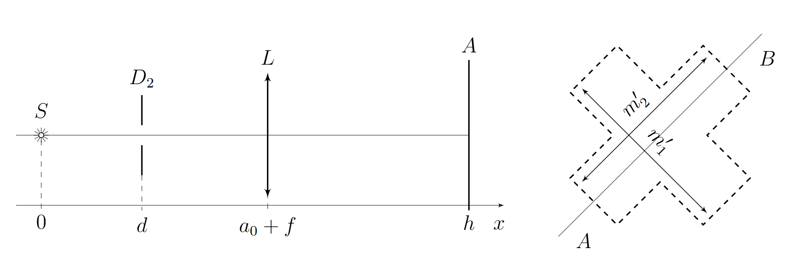
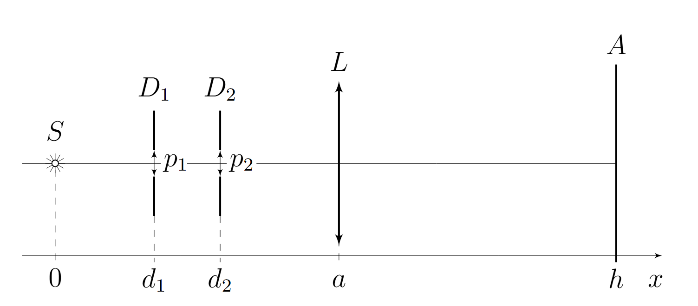

X26 (2026) — English translation

Equipment: Optical bench; Constant voltage source; Carriages for the optical bench (5 pcs.); Magnetic holders for diaphragms (2 pcs.); Diaphragms of different shapes (2 pcs.); Magnetic holders (3 pcs.); Screen; Lens; LED in holder; Banana-banana wire (2 pcs.); Roulette; Ruler; Sheet A4; Masking tape.
The light source in this problem is an LED with a diameter of $d_s=(4.0\pm0.2)~мм$ (see photo). The A4 sheet is designed to be attached to the screen.
Photo of the LED.

Note. Do not apply voltage more than $8~В$ to the LED! This may cause it to burn out! The LED is very powerful, don't look at it when it's on! Use a personal lamp to illuminate your work area. The LED is a polar element and glows only if the polarity is observed when connecting it to the circuit. The red socket corresponds to the plus of the LED, the black socket to the minus. To power the LED, use a constant voltage source $U = 8~В$. When operating correctly, the LED should glow brightly and should NOT get very hot. Once you plug the bananas into the sockets on the LED housing, don’t take them out again! This may damage the LED housing. Error estimates and error crosses on graphs are required at all points unless explicitly stated otherwise!
Assemble the setup from the source, lens and screen as shown in the figure. Let us introduce the axis $x$ and denote the lens coordinate $a$ and the screen coordinate $h$. We denote the focal length of the lens as $f$.
Installation diagram A1.


Let us enter the aperture sizes indicated in the figure: size $c$ of aperture $D_1$ and sizes $m$, $n$ of aperture $D_2$. In all subsequent parts of the problem, the diaphragms must be oriented as shown in the figure, i.e. should show on the screen an image of a square (the sides are horizontal and vertical) and a cross (the sides are diagonal, i.e. approximately 45 degrees with the horizon). For this and all subsequent parts, use $h = h_\text{max} = 1\text{,}15~\text{м}$. When $h$ is fixed, there are two lens positions at which a clear image can be seen on the screen. You need to choose the one in which the required measurements will have the greatest accuracy. First, let's study how one aperture affects the image obtained on the screen. Assemble the following setup: source, aperture $D_2$ (cross), lens and screen (see figure). Place the lens at such a distance $a_0$ from the source that its image $S'$ is focused on the screen. Place the diaphragm at a distance of $d=a_0/2$ from the source. Attention! At this point and further, accurate alignment of the installation is extremely important! It is necessary that the centers of all optical elements located on the optical bench lie on the same straight line. Any deviations from precise adjustment can lead to significant distortions in the experimental result.
For this and all following parts use $h = h_\text{max} = 1\text{,}15~\text{м}$.
When $h$ is fixed, there are two lens positions at which a clear image can be seen on the screen. You need to choose the one in which the required measurements will have the greatest accuracy.
First, let's study how one aperture affects the image obtained on the screen. Assemble the following setup: source, aperture $D_2$ (cross), lens and screen (see figure). Place the lens at such a distance $a_0$ from the source that its image $S'$ is focused on the screen. Place the diaphragm at a distance of $d=a_0/2$ from the source.
Attention! At this point and further, accurate alignment of the installation is extremely important! It is necessary that the centers of all optical elements located on the optical bench lie on the same straight line. Any deviations from precise adjustment can lead to significant distortions in the experimental result.
Installation diagram B1.

Now position the lens at a distance $a_0 + f$ from the source.
Installation diagram B2.

Assemble the circuit shown in the figure on the optical bench. The distance between the source and the first diaphragm $D_1$ (square) is $d_1=f/2$, the distance between the source and the second diaphragm $D_2$ (cross) is $d_2=f$. Place the lens at a distance $a=a_0$ from the source. We will call this position of the diaphragms and lenses the initial position.
Installation diagram part C.

Position the lens at such a distance $a_1$ that the screen produces a focused image of the aperture $D_1$ (square).
Return the installation to its original position. Position the lens at such a distance $a_2$ from the source that a focused image of the aperture $D_2$ (cross) appears on the screen.
Let's move on to a theoretical description of the image on the screen. Let diaphragms $D_1'$ and $D_2'$ be parallel narrow slits of dimensions $p_1$ and $p_2$, located at distances $d_1$ and $d_2$ from the source, respectively. The centers of the slots lie on the optical axis of the system.
Source: https://pho.rs/p/4787